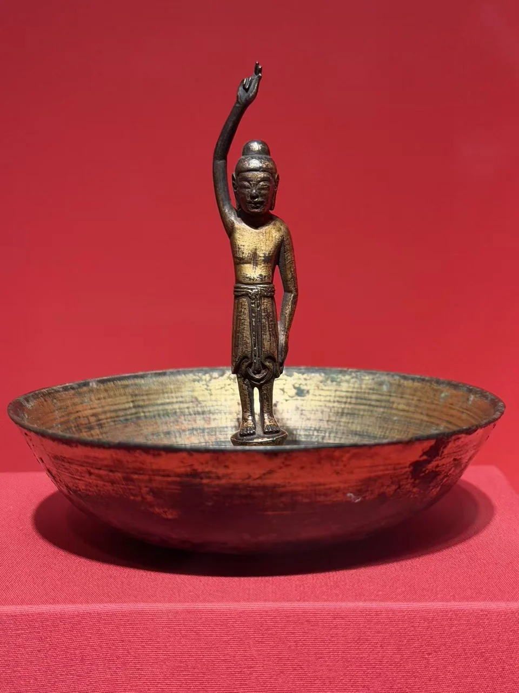
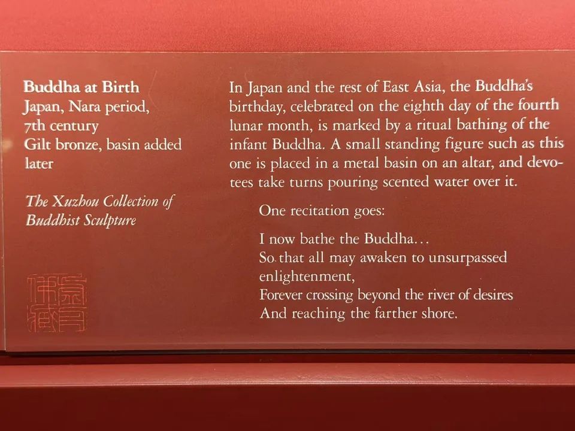

THE XUZHOU COLLECTION
诞生佛与浴佛盆
Buddha at Birth
一手指天、一手向下的小像，立在浅盆中。

- 地区
- 日本
- 年代
- 年代有疑点：展签并列奈良时期与7世纪
- 材料
- 鎏金青铜；盆为后配
- 收藏
- 虚舟收藏（私人收藏）
- 观看地点
- 休斯顿美术馆（MFAH）
作品札记
高举的右臂让小像的轮廓超过头顶，另一只手垂在身侧。佛身居于浅盆中央，宽阔的盆沿把这个本来细小的形象围成一处可以接近的仪式空间；盆内反光与佛身深色形成对照。
馆方把它与浴佛仪式联系起来：以香水沐浴诞生佛，纪念佛陀降生。展签同时注明盆为后配，今天所见并非可以直接视作原配的一整套器物。
资料注
现场展签并列“Nara period”与“7th century”。奈良时代通常为710—794年，两项不一致；本页保留这一年代疑点，尚不能确定哪一项需要更正。
现场展签与原始记录

- 题名
- Buddha at Birth
- 地区
- Japan
- 年代
- Nara period, 7th century
- 材料
- Gilt bronze, basin added later